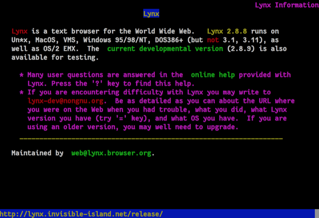

The history of web development starts from 1990 ...
-
1990
The first web browser - WorldWideWeb.
WorldWideWeb was released in 1990 by Tim Berners-Lee when he was working at CERN and renamed to Nexus later.
The browser was more like a browser-editor with graphical features at that time and it could only be used on NeXT computers.
(Photo from W3C )
-
1991
HTML (Hypertext Markup Language)
The first draft of HTML was published by Tim Berners-Lee by started a WWW-talk mailing list.
HTML that invented by Tim was strongly influenced by SGML which stands for Standard Generalized Mark-up Language is an internatonally agreed upon method for marking up text into structural units. -
1992
Lynx

Lynx was created by programmers at the University of Kansas and still being maintained in 2020.
Lynx is a texted-based browser that can not display images or videos, but it can handle non-text content via launching external programs. It highlight the chosen link using cursor keys and ask users to interact with keyboard input, or having all links on a page numbered and entering the chosen link's number.
(Photo from Lynx ) -
1993
Mosaic
Mosaic was created by Marc Andreessen and Eric Bina from the University of Illinois.
It was able run on multiple platforms including Windows and was available for free. These features made it the most popular browser worldwide after it launched.
(Photo from webdesignmuseum.org )
HTML 1.0
First proposal for an HTML specification draft by Berners-Lee and Dan Connolly published in mid-1993 and expired after six months. -
1994
Netscape Navigator
Netscape Navigator was proprietary web browser sold by Netscape Communications Corp.
It was inspired by the success of the Mosaic web browser and became the most popular browser in the world, until it was surpassed by Microsoft during the Browser Wars. -
1995
Internet Explorer 1.0 and the Browser Wars
In order to compete with Netscape, Microsoft released Internet Explorer 1.0 and started a Browser War.
In its first version, Internet Explorer is mostly licensed code from Spyglass Mosaic, though this is eventually rewritten. It lacked crucial features, but subsequent versions of Internet Explorer would see marked improvements.
HTML 2.0
HTML 2.0 contains all the features of HTML 1.0 along with that few additional features, which remained as the standard markup language for designing and creating websites until January 1997 and refined various core features of HTML.
JavaScript 1.0
Netscape created and released JavaScript with their browser.
The language is originally developed by Brendan Eich in the months prior, and soon became a novel, foundational, language of the web. JavaScript gave websites powful computing capabilities they never have before. -
1996
CSS (Cascading Style Sheets)
Håkon W. Lie proposed the first iteration of Cascading Style Sheets as a way of styling web pages in 1995.
At that time there were serveral other style sheet languages, after discussions on public mailing lists and inside World Wide Web Consortium, the first W3C CSS Recommendation released. -
1997
HTML 3.2
After HTML 3.0 is officially abandoned, the W3C drafts and publishes HTML 3.2 as an official recommendation.
The new specification includes several features already implemented in browsers such as tables, superscripts, advanced forms, and more. Much of this version of HTML is still in use today.
ECMAScript
ECMA releases an official standard for ECMAScript, based off the work being done with JavaScript.
Netscape had developed JavaScript in the years before, but wished to standardize to avoid being the sole maintainer. ECMAScript draws heavily from version of JavaScript implemented in the Netscape browser, with some improvements. -
1998
CSS2
CSS level 2 specification was developed by the W3C and became a recommendation in 1998.
It includes a number of new capabilites and features such as positioning, media types, bidirectional text and new font properites. ECMAScript 2
ECMAScript 2 released.
XML Version 1.0
The W3C publishes a specification for XML in 1998.
XML stands for Extensible Markup Language, it is an application profile of SGML and a way to structure data readable by both machines and computers. XML is used heavily in web services, and allows for web servers and clients to exchange information back and forth programatically. -
1999
HTML 4.01
HTML 4.01 was release and became a W3C recommendation. In this version, they slightly tweaked objects, forms, and images, fixed some bugs, and created a generally more stable version, which would be used by web developers for more than 10 years.
CSS3
CSS3 released in 1999 and has huge different with CSS 2.
CSS 3 is divided into several separate documents called "modules" instead of having one large single specification defining various features. Due to the modularization, different modules have different stability and statuses.
ECMAScript 3
ECMAScript 3 released.
-
2000
XHTML 1.0
XHTML 1.0 became a W3C recommendation in 2000, it is the XML equivalent to strict HTML 4.01.
XHTML strictly enforces its ruleset, which makes it interoperable, but more difficult to implement in browsers. -
2002
AWS (Amazon Web Services)
First Amazon Web Services on Amazon.com platform was opend to all developers in 2002.
It is a pay-as-you-go basis on-dmand cloud computing platforms and APIs to individuals, companies and governments. -
2003
Safari
Apple releases its second ever browser attempt - safari in 2003 on Mac OS X platform.
Safari allows Macs to ship with a native browser, and end their relationship with Microsoft’s Internet Explorer. It uses a little known open source browser engine known as KHTML, which will eventually transform into Webkit.
CSS Zen Garden
Dave Shea launches CSS Zen Garden in 2003.
The garden is a collection of user contributed webpages, all with the same HTML, but each with a different CSS stylesheet. The examples on Shea’s site help push the web standards movement forward, and convinces many of the strength of CSS.
WordPress
WordPress is created by Matt Mullenweg and Mike Littlein 2003.
WordPress is a free and open-source content management system (CMS). Features include a plugin architecture and a template system, referred to within WordPress as Themes. -
2004
Mozilla Firefox
Firefox was releas in 2004, after Mozilla working on its development for almost four years.
Mozilla is an open source project, Firefox is a free and open-source web browser. Firefox implements current and anticipated web standards by using Gecko layout engine. -
2005
AJAX
AJAX stands for Asynchronous Javascript and XML, was first publicly used in 2005 by Jesse James Garrett.
It is not a new technology, but Garrett officially codified the methodology. -
2006
jQuery
jQuery is created by John Resig at BarCamp in 2006.
It was influenced by Dean Edwards earlier cssQuery library and currently maintained by a team of developers led by Timmy Willison It is a JavaScript library designed to simplify HTML DOM tree traversal and manipulation, as well as event handling, CSS animation, and Ajax. -
2008
Google Chrome
Google Chrome is first released on 2008 for Windows XP and later.
Google Chrome was using WebKit as their rendering engine, but eventrually forked it to Blink engine. A few months after it released it gained over 1% usage share and overtake the market by the beginning of the next decade. -
2010
Responsive Web Design
Ethan Marcotte coined the term "Responsive Web Design" in an article named A list Apart. It is an approach to make web pages render well on variety of devices and screen sizes to ensure usability and satisfaction.. AngularJS
AngularJS is a open-source front-end web framework developed by Google and community of individuals and corporations released in 2010
AngularJS helps web designers create single page applications using data binding directly in HTML templates. It also provides helpers for connecting with a server, manipulating data and managing business logic. -
2013
React
React was created by developers from Facebook.
It is a framework for building web user interfaces. It was inspired by the PHP framework XHP, React embraces the idea of components, and allows users to create individual components which respond and automatically update based on data and content changes. -
2014
HTML 5
HTML5 is formally made a recommendation by the W3C in 2014.
HTML5 adds new syntactic elements and attributes, deeper APIs, and more access to native features. It also includes much broader support for multimedia and web graphics with elements like video and canvas.
Vue.js
Vue.js was launched by Evan You in 2014.
It is an open-source model–view–viewmodel front end JavaScript framework for building user interfaces and single-page applications Vue is break up the framwork features into modules, so that developers could use whatever piece of the framework they want.
-
2015
Microsoft Edge
Microsoft Edge is first releas on 2015 for Windows 10 and Xbox One.
It was initially built with Microsoft's own proprietary browser engine EdgeHTML and their Chakra JavaScript engine, a version now referred to as Microsoft Edge Legacy.